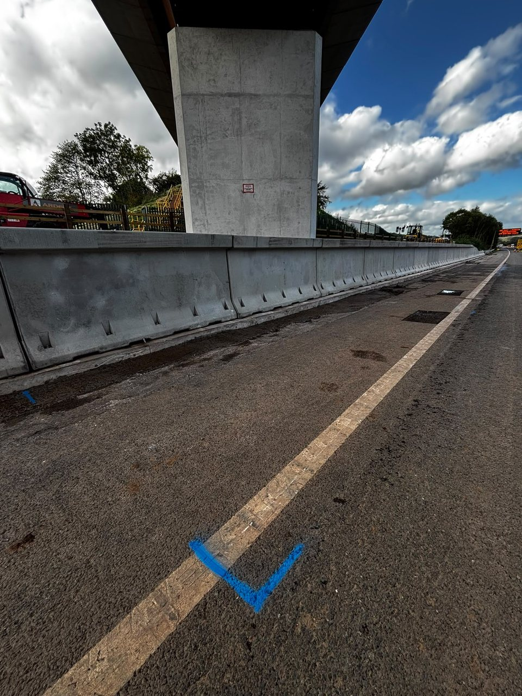
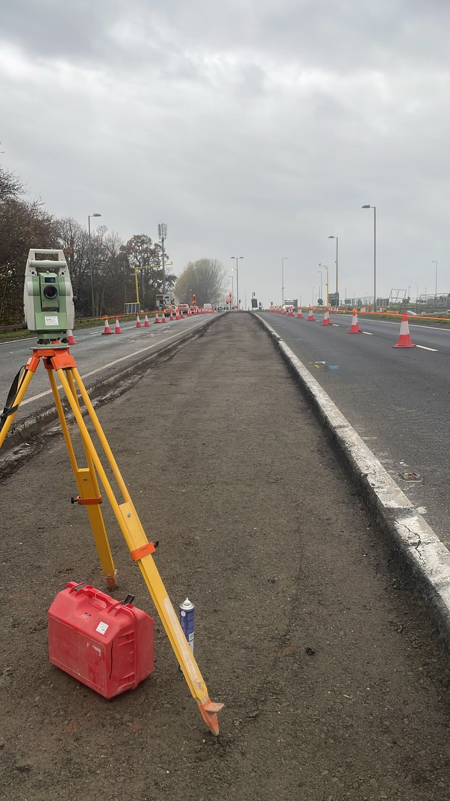
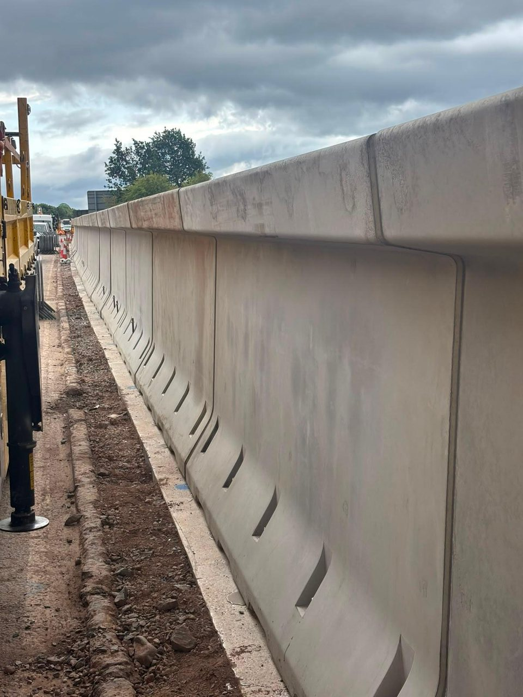
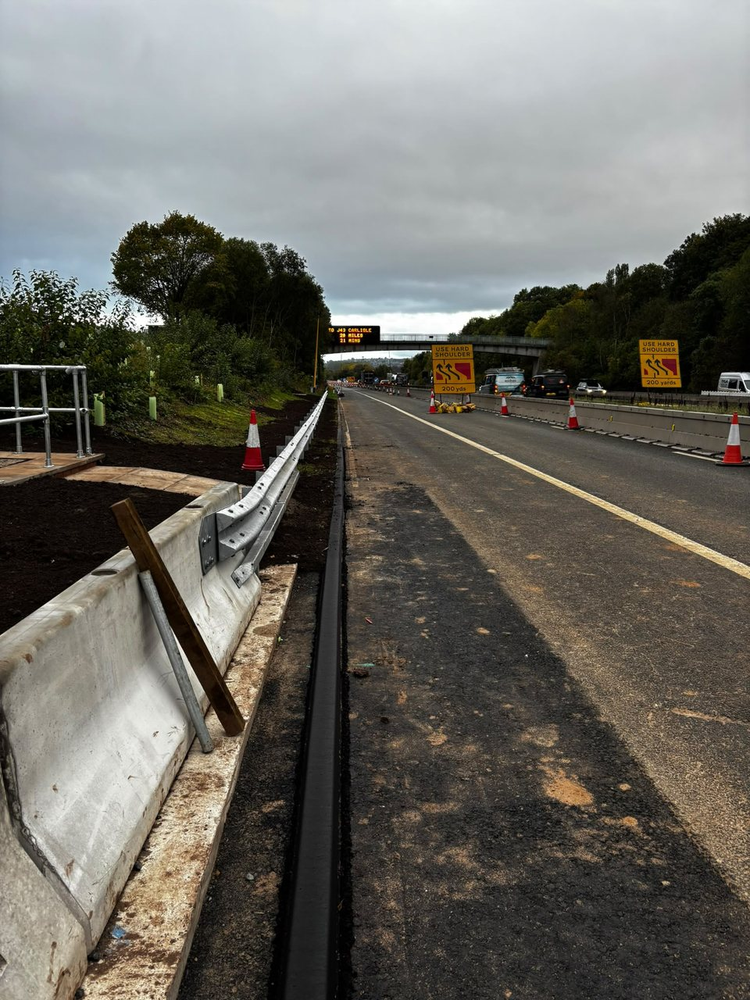
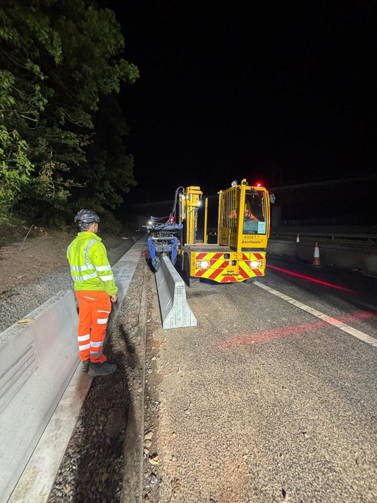
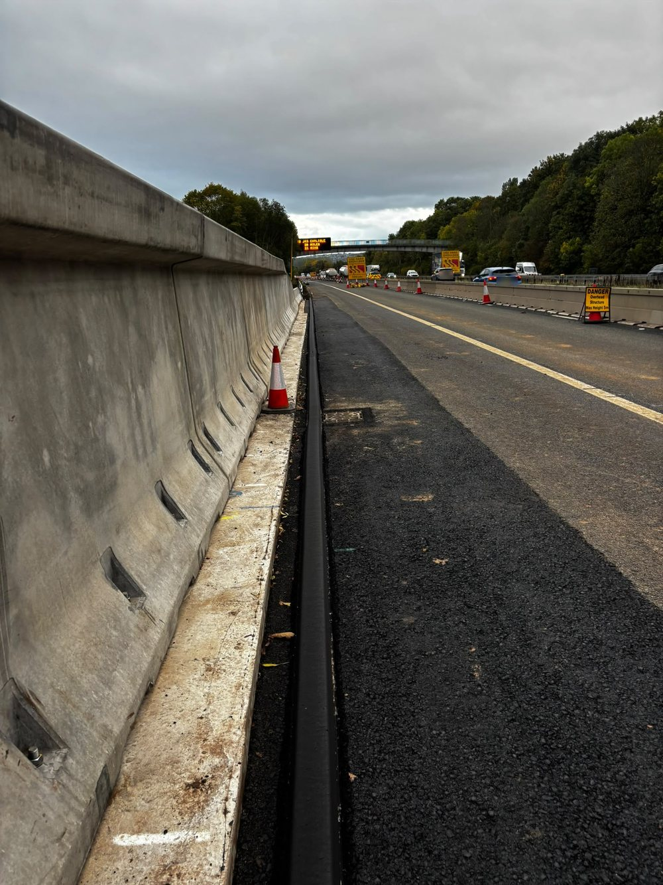
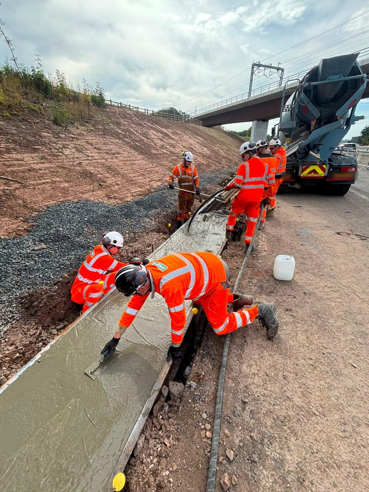

Highways & Infrastructure
Setting out and checks for road and highway schemes, from earthworks to the finished surface.







What you get on a highway scheme
Ryan sets out alignments, levels and drainage on highway schemes and checks the work as each layer goes down. Your site team gets a clear line and level to build to, and a record that the road matches the design.
Setting out and engineering checks for motorway, trunk road, junction and highway improvement schemes, from bulk earthworks through to final compliance checks.
- Alignments, carriageways & pavement layersHighway setting out for road alignments, carriageway levels, kerb lines, drainage and pavement layers.
- Motorways, junctions & improvement schemesMotorway and trunk road engineering, junctions, roundabouts, access roads and highway improvement schemes.
- Earthworks, embankments & highway drainageEarthworks and embankments, coordinated with highway drainage and utilities.
- As-builts, compliance & quality assuranceAs-built surveys, compliance checks and quality assurance throughout the build.
See the full list (10)
- Highway construction setting out
- Road alignments and carriageway levels
- Kerb lines, drainage and pavement construction
- Motorway and trunk road engineering
- Junctions, roundabouts and access roads
- Highway improvement schemes
- Earthworks and embankment construction
- Highway drainage and utility infrastructure
- As-built surveys and compliance checks
- Highway construction quality assurance
What to send Ryan
You don’t need all of this before getting in touch. Send what you have and Ryan will plan and price the job from there.
Not sure what you’ve got? Call 07956 996 424 and talk it through.
- The site address or postcodeWhere the job is.
- The highway drawingsGeneral arrangement, alignment and level drawings, or CAD files.
- Traffic management and accessHow and when the work area can be reached safely.
- The programmeWhich section is being built and when setting out is needed.
- When you need it, and who to meet on siteRough dates are fine.
Discuss your highway scheme with Ryan
Call or email Ryan Johnston directly, or send an enquiry with this service already selected.
07956 996 424 ryan@rgcivilengineering.co.uk